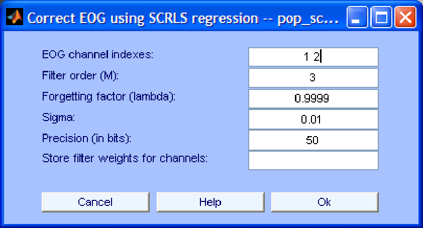

Next: Algorithms based on the
Up: EOG removal using regression
Previous: Conventional Recursive Least Squares
Contents
The algorithm RLS is well-known for its fast convergence but also for its numerical unstability. However, stability of the RLS algorithm can be guaranteed by imposing bounds on the relative precision of the computations performed in the different steps of the algorithm. This is explained in detail in [15]. The current implementation of this algorithm is very slow and therefore we recommend using the conventional RLS algorithm whenever possible. Only if the conventional RLS algorithm becomes unstable it is worth trying its stable variant.
The graphical interface of the algorithm looks like Fig. 3. There, we can set up the precision of the computations in bits. Increasing the precision increases the accuracy of the filter weights estimates but also increases the risk of numerical unstability.
Figure 3:
Interface window for EOG removal using the stable RLS algorithm.
|  |
gomezher
2007-12-10